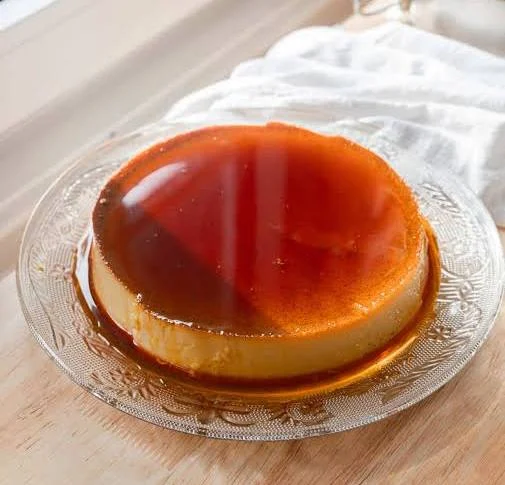

Description
Leche flan is a popular Filipino dessert made from egg yolks, milk, and sugar. It is steamed until set, chilled, and turned out onto a plate with caramel sauce.
Recipe Information
| Preparation Time | Cooking Time | Servings | Difficulty |
|---|---|---|---|
| 15 minutes | 45-55 minutes | 6-8 people | Moderate |
Ingredients
For the caramel
- ½ cup white sugar
- 2 tablespoons water
For the custard
- 10 egg yolks
- 1 can (300 ml) condensed milk
- 1 can (370 ml) evaporated milk
- 1 teaspoon vanilla extract
Instructions
- Place the sugar and water in a small pan. Heat until the sugar melts and turns amber.
- Carefully pour the caramel into a llanera or heat-safe mold and tilt to coat the bottom. Let it cool.
- In a bowl, gently mix the egg yolks, condensed milk, evaporated milk, and vanilla. Avoid beating in too much air.
- Strain the mixture into the prepared mold for a smoother custard.
- Cover the mold with foil and steam over low to medium heat for about 45–55 minutes, or until set.
- Cool, then refrigerate until completely chilled.
- Run a thin knife around the edge and invert onto a serving plate.
Video Tutorial
Here's a quick and easy tutorial on how to make a simple but delicious leche-flan.
Recipe Feedback
Send us a feedback if our leche flan recipe fits your taste!